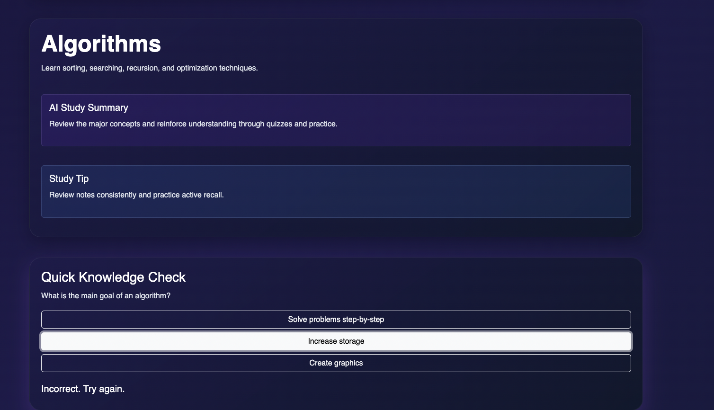
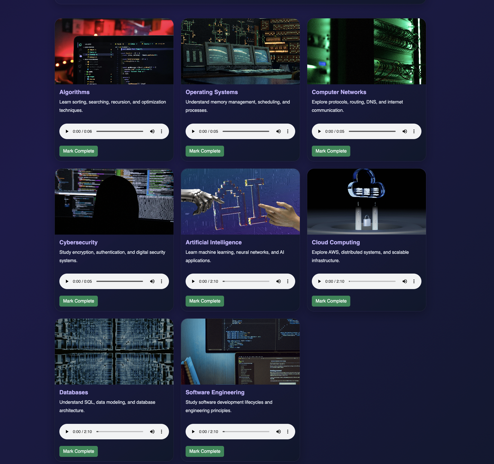

Application Screenshots

Smart Dashboard
Track study progress, search topics, and navigate learning resources.

Interactive Study Cards
Browse curated computer science topics with audio learning support.

Productivity Features
Use study timers, persistent notes, quizzes, and progress tracking tools.